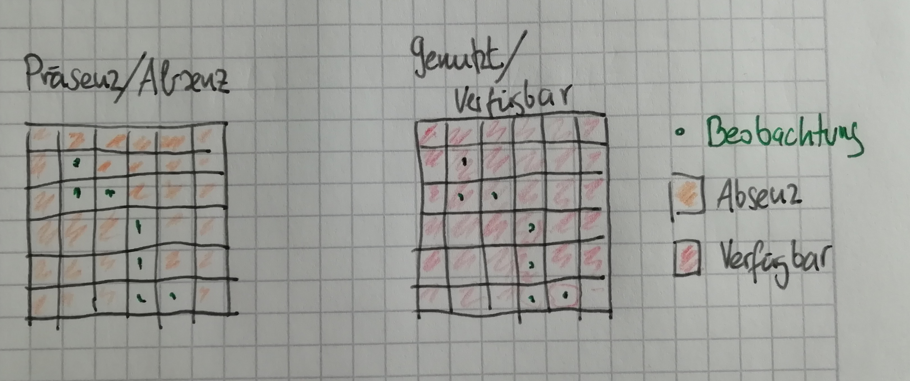
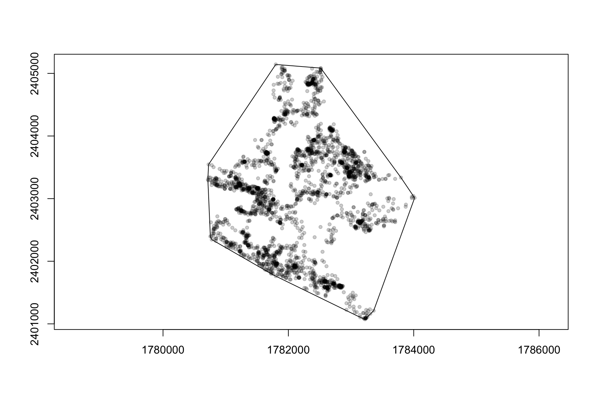
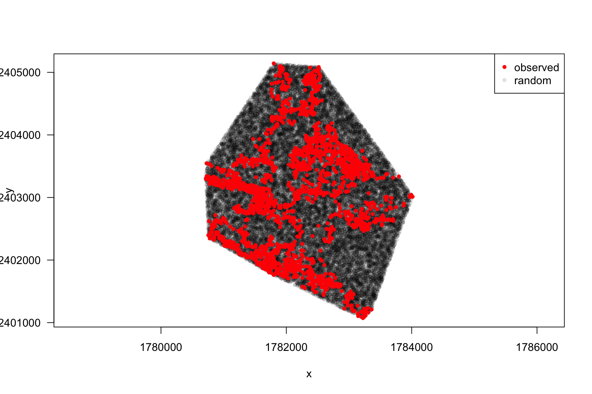
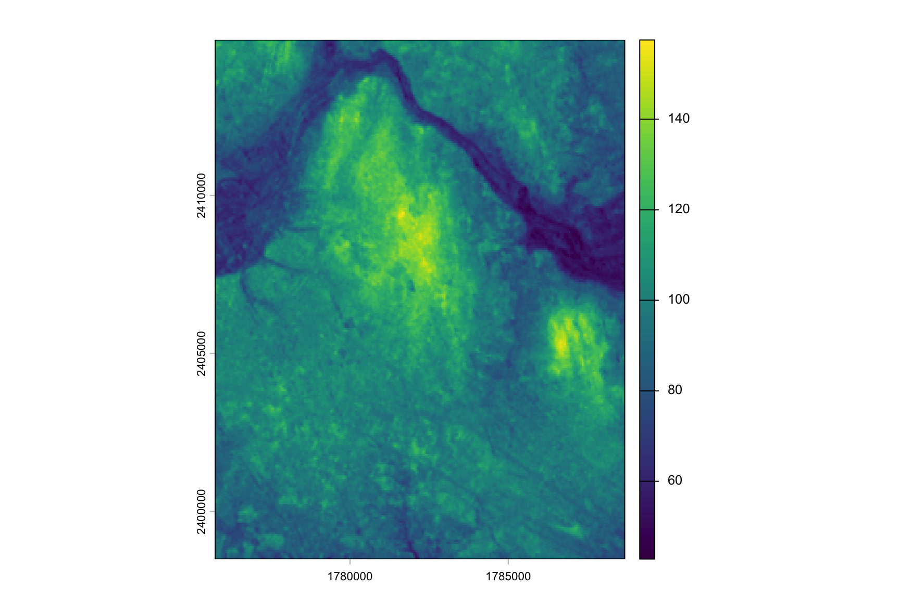
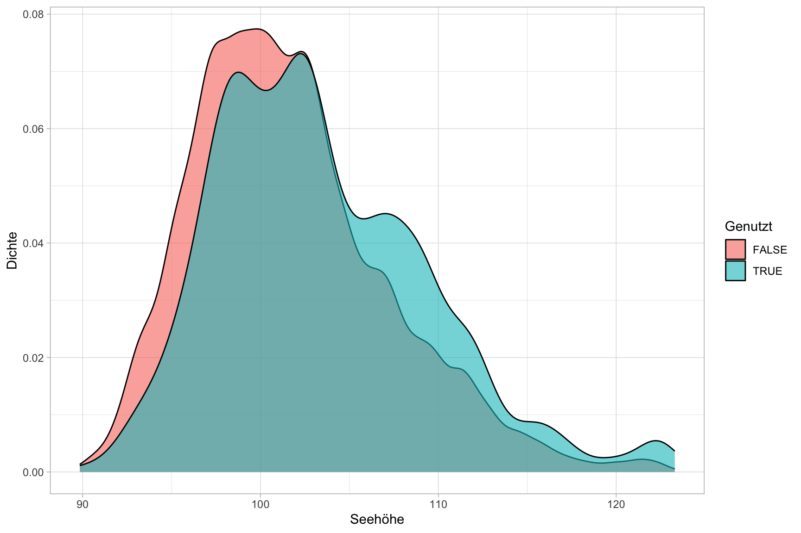
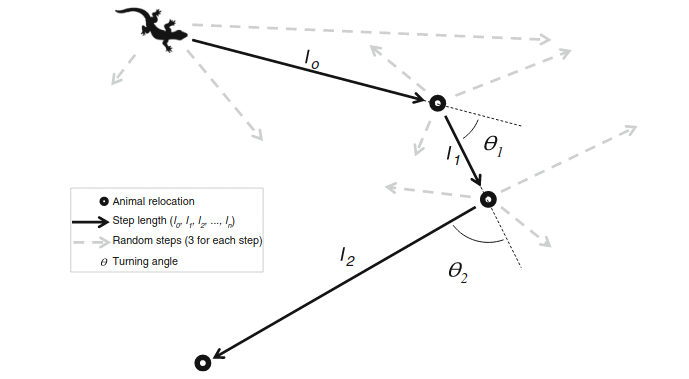

![]()
library(amt)
marder1 <- filter(amt_fisher, name == "Lupe")Habitatselektion 2
Resource Selection Functions
July 4, 2026
Wo sind wir?
- 13.04.2026: E01: Einführung
- 20.04.2026: E02: Erfassung von Wildtieren
- 27.04.2026: E03: Verbreitung 1
- 04.05.2026: E04: Verbreitung 2
- 11.05.2026: E05: Occupancy-Modelle 1 (online)
- 18.05.2026: E06: Occupancy-Modelle 2
- 01.06.2026: E07: Abundanz 1
- 08.06.2026: E08: Abundanz 2
- 15.06.2026: E09: Telemetrie 1: Random Walks etc
- 22.06.2026: E10: Telemetrie 2: Streifgebiete
- 29.06.2026: E11: Telemetrie 3: Habitatselektion (hybrid)
- 06.07.2026: E12: Telemetrie 4: Habitatselektion (online)
Resource Selection Functions (RSF)
- Resource Selection Functions (RSF) bieten einen erweiterten Ansatz zum Analysieren von Habitatselektion bei Tieren.
- Dabei werden in der Regel Präsenzpunkte (z.B. durch Telemetrie erhoben) mit verfügbaren Punkten (die auch genutzt werden können) verglichen.
- Das häufigste Design zur Quantifizierung von Verfügbarkeit ist, dass aus einem Gebiet (z.B. Streifgebiet) viele zufällige Punkte gezogen werden.
- RSF erlauben es beliebig viele Kovariaten in einem Modell zu berücksichtigen, Interaktionen mit nicht räumlichen Kovariaten (z.B. Tageszeit, Jagdzeit) und mehrere Tiere gleichzeitig zu berücksichtigen.
RSFs werden häufig als
\[ w(\mathbf{X}(s); \mathbf{\beta}) = \exp(X_1(s)\beta_1 + \dots + X_k(s)\beta_k) \]
definiert. Mit
- \(w(\cdot)\) ist die Habitatselektionsfunktion.
- \(\mathbf{X}(s)\) ist der Wert der Kovariaten \(X\) an Position \(s = (x, y)\) (im Raum).
- \(\mathbf{\beta}\) Sind die \(1, \dots, k\) Selektionskoeffizienten.
Die \(\mathbf{\beta}\) müssen geschätzt werden.
- \(\mathbf{\beta}\) werden in der Regel mit einer logistischen Regression geschätzt.
- Interpretation der \(\mathbf{\beta}\) ist aber etwas anders, weil wir keine Präsenz/Absenz-Punkte haben (wie z.B. bei Occupancy-Modellen), sondern genutzte und verfügbare Punkte haben.

Überlegen Sie:
Für eine Studie werden 21 Rehe für 2 Jahre mit einem Telemetriesender ausgestattet und die Position wird alle 6 h aufgezeichnet. Danach wird über das Studiengebiet ein 1 * 1 km Grid gelegt und in jeder Zelle gezählt wie oft ein Reh in der Zelle war. Es wurden 74 % der Zellen mindestens einmal besucht, kann man davon ausgehen, dass die restlichen 26 % der Zellen nicht genutzt wurden?
- Ja
- Nein
Antwort
Die richtige Antwort ist 2.
Die Telemetrieaufnahme ist nur eine Momentaufnahme. Der Sender löst nur alle 6 Stunden aus, weswegen das Tier außerhalb der Aufnahme die 26 % der Zellen nutzten könnte. Die Telemetrie findet außerdem nur für einen begrenzenten Zeitabschnitt im Leben des Tiers statt.
Anpassen einer RSF
- Je nach Hierarchieebene (meist second- oder third-order) wird genutztes und verfügbares Habitat definiert.
- Im verfügbaren Habitat wird eine große Anzahl an zufälligen Punkten verteilt.
- An den genutzten und verfügbaren Punkten werden die Werte der Kovariaten extrahiert.
- Zur Schätzung der Selektionskoeffizienten wird eine logistische Regression an die Daten angepasst.
Ein Beispiel
Datensatz: Fischmarder in den USA1
Beobachtete Punkte:
Als Nächstes muss die Verfügbarkeit quantifiziert werden. Z.B. mit einem MCP100-Streifgebiet:


Hinzufügen von Kovariatenwerten. Wir berücksichtigen erst einmal nur eine Kovariate: Seehöhe.

An jedem Punkt (egal ob das Tier an diesem Punkt vorkam oder ob es ein Zufallspunkt ist), fragen wir den Wert der Seehöhe (dem = digital elevation model) ab.
Die Verteilung der Kovariate (dem) an den genutzten und verfügbaren Punkten:

Anpassen eines Modells (logistische Regression):
Call:
glm(formula = case_ ~ elevation, family = binomial(), data = m3)
Coefficients:
Estimate Std. Error z value Pr(>|z|)
(Intercept) -7.515044 0.329143 -22.83 <2e-16 ***
elevation 0.050852 0.003184 15.97 <2e-16 ***
---
Signif. codes: 0 '***' 0.001 '**' 0.01 '*' 0.05 '.' 0.1 ' ' 1
(Dispersion parameter for binomial family taken to be 1)
Null deviance: 20133 on 33043 degrees of freedom
Residual deviance: 19888 on 33042 degrees of freedom
AIC: 19892
Number of Fisher Scoring iterations: 5(Intercept): Im Kontext einer RSF ist der Intercept nicht relevant und sollte einfach ignoriert werden.elevation: Ein positiver geschätzer Koeffizient fürelevationgibt Hinweis darauf, dass höhere Gebiete bevorzugt werden.
Interpretation von RSFs
Man spricht von einem “Relativen Risiko”, dass ein Punkt genutzt wurde bzw. von einer Relativen Selektionsstärke (RSS).
Man kann sich das RSS so vorstellen: Wenn ein Tier die Wahl hat zwei Punkte aufzusuchen (\(s_1\) und \(s_2\)) und sich \(s_1\) und \(s_2\) um genau eine Einheit der Kovariaten \(X_1\) unterscheiden, dann wird die Wahrscheinlichkeit für \(s_2\) gegenüber \(s_1\) als \(\exp(\beta_1)\) angegeben.
Wenn wir uns Modell 1 anschauen:
Nehmen wir für Punkt \(s_1\) eine Seehöhe von 100 m und für Punkt \(s_2\) eine Seehöhe von 101 m an. Die Relative Selektionsstärke für Punkt \(s_2\) gegenüber Punkte \(s_1\) ist dann:
\[ \begin{aligned} RSS(s_2, s_1) &=\frac{w(s_2)}{w(s_1)} = \frac{\exp(101 \beta_\text{dem})}{\exp(100 \beta_{\text{dem}})} \\ &= \exp(101\beta_\text{dem} - 100 \beta_\text{dem}) \\ &= \exp((101 - 100)\beta_\text{dem}) \\ &= \exp(\beta_\text{dem}) \end{aligned} \]
Ein RSS von
- \(1\) bedeutet, es gibt keine Präferenz für \(s_2\) gegenüber \(s_1\).
- \(<1\) bedeutet, \(s_1\) wird gegenüber \(s_2\) bevorzugt (ein Wert von 0.5 heißt, dass sich die Selektionwahrscheinlichkeit für \(s_2\) halbiert).
- \(>1\) bedeutet, \(s_2\) wird gegenüber \(s_1\) bevorzugt (ein Wert von 2 heißt, dass sich die Selektionwahrscheinlichkeit für \(s_2\) verdoppelt).
Wenn wir das eben gezeigte auf die Seehöhe anwenden:
Überlegen Sie:
Was heißt ein RSS von 2?
- Die Wahrscheinlichkeit, dass Punkt \(s_2\) gegenüber \(s_1\) gewählt wird ist doppelt so hoch.
- Die Wahrscheinlichkeit, dass Punkt \(s_2\) gegenüber \(s_1\) gewählt wird ist halb so hoch.
- Die Wahrscheinlichkeit, dass Punkt \(s_2\) gegenüber \(s_1\) gewählt wird ist dreimal so hoch.
- Die Wahrscheinlichkeit, dass Punkt \(s_2\) gegenüber \(s_1\) gewählt wird ist gleich.
Antwort
Die richtige Antwort ist 1
Hinzufügen einer Interaktion
Mit einer Kovariate:
\[ w(\mathbf{X}(s); \mathbf{\beta}) = \exp(X_1(s)\beta_1 ) \]
Mit einer Interaktion mit Tageszeit / Jagdzeit oder ähnlichem
\[ w(\mathbf{X}(s); \mathbf{\beta}) = \exp(X_1(s)\beta_1 + X_1(s)X_2\beta_2) \]
In R wird eine Interaktion mit : geschrieben:
Call:
glm(formula = case_ ~ elevation + elevation:tod_, family = binomial(),
data = m2a)
Coefficients:
Estimate Std. Error z value Pr(>|z|)
(Intercept) -7.3012688 0.3501598 -20.851 < 2e-16 ***
elevation 0.0252818 0.0035048 7.213 5.45e-13 ***
elevation:tod_night 0.0298061 0.0008671 34.374 < 2e-16 ***
---
Signif. codes: 0 '***' 0.001 '**' 0.01 '*' 0.05 '.' 0.1 ' ' 1
(Dispersion parameter for binomial family taken to be 1)
Null deviance: 20133 on 33043 degrees of freedom
Residual deviance: 17045 on 33041 degrees of freedom
AIC: 17051
Number of Fisher Scoring iterations: 7Ausblick Step-Selection Functions
- Eine zentrale Annahme bei RSFs ist, dass die Lokalisierungen unabhängig sind.
- Diese Annahme trifft bei modernen Telmetriedaten mit kurzen Zeitabständen zwischen Lokalisierungen oft nicht mehr zu.
- Eine Erweiterung der RSF sind Step-Selection Functions (SSFs).

Nach Thurfjell et al. 2014; Movement Ecology 2014,2:4
- Die Selektion-Funktion bleibt gleich, lediglich die Verfügbarkeit wird nun anders quantifiziert.
- Die Schätzung der Selektionskoeffizienten erfolgt mit einer bedingten logistischen Regression (an der Interpretation ändert sich nichts).
- Integrated SSF (iSSF) ermöglicht es Bewegung und Habitatselektion zu vereinigen (z.B. läuft ein Tier schneller/langsamer in Abhängigkeit von Kovariaten).
Rückblick
Was haben wir uns angeschaut
- 13.04.2026: E01: Einführung
- 20.04.2026: E02: Erfassung von Wildtieren
- 27.04.2026: E03: Verbreitung 1
- 04.05.2026: E04: Verbreitung 2
- 11.05.2026: E05: Occupancy-Modelle 1 (online)
- 18.05.2026: E06: Occupancy-Modelle 2
- 01.06.2026: E07: Abundanz 1
- 08.06.2026: E08: Abundanz 2
- 15.06.2026: E09: Telemetrie 1: Random Walks etc
- 22.06.2026: E10: Telemetrie 2: Streifgebiete
- 29.06.2026: E11: Telemetrie 3: Habitatselektion (hybrid)
- 06.07.2026: E12: Telemetrie 4: Habitatselektion (online)
Weiterer Verlauf
Prüfungsvorleistung
- Online in StudIP ab dem 13.7.26
- Am 13.7.26, stehe ich nochmals zwischen 9:00 und 12:00 für Fragen zu der Hausarbeit zur Verfügung.
- Abgabe der Hausarbeit am 18.9.26
Wenn Sie sich Wildtierökologie interessieren:
- Verteiler der Abteilung Wildtierwissenschaften: https://listserv.gwdg.de/mailman/listinfo/studierende-wildtierwissenschaften